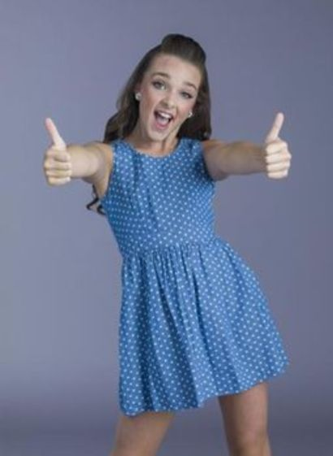

Kendall

Kendall K. Vertes was born on December 9th 2002. Her parents are Erno Vertes and Jill Vertes. Her siblings are Charlotte and Ryleigh Vertes. Kendall's favorite style of dance is contemporary. Kendall is from Township Pennsylvania.